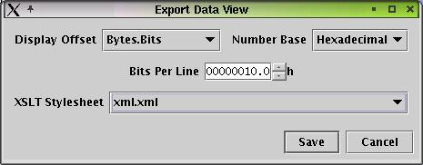
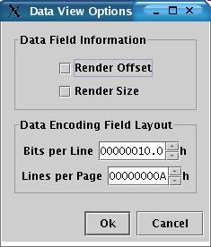

Data -> New
Creates new zero length data.
Data -> Open File
Opens a binary file and display data.
Data -> Open Data Object
Opens a data object file and display data. This can be used to read in hexdumps.
Data -> Open Socket
Listen to socket and display incoming data
Data -> Save File
Save the current data as a flat binary file. The filesize is rounded to the
next byte boundary and padded with zero bits.
Data -> Save File As
Saves th current Data as a flat binary file. The filesize is rounded to the
next byte boundary and padded with zero bits.
Data -> Write To Socket
Write selected data to previously opened socket. The filesize is rounded to
the next byte boundary and padded with zero bits.
Data -> Close
Closes the currently selected project
Data -> Export Data
Saves the current data as text using a user defined data encoding.
Data -> Import Data
Opens a text file and converts the text into binary data using a user defined data encoding.
Data -> Exit
Closes all projects and exit. Save workbench.xml and options.xml
Edit -> Undo
Edit -> Redo
Edit -> Cut
Deletes the selected data range and copies it onto the data clipboard.
Edit -> Copy
Copies the selected data range onto the data clipboard.
Edit -> Paste
Copies the content of the data clipboard over the currently selected data range.
Edit -> Delete
Deletes the selected data range.
Edit -> Unselect
Sets the selected data range to zero. The selection offset stays the same.
Edit -> Select All
Selects the complete data.
Edit -> Define Find And Replace
Edit -> Find Next
Search forward for next match, starting at the current offset.
Edit -> Find Previous
Search backwards for next match, starting at the current offset.
Edit -> Find All
Search current data selection for all matches and display results in new static
data view.
Edit -> Replace
If the current data selection equals search data replace it with replace data.
Edit -> Replace All
Search current data selection and replace all found matches.
View -> Export View
This is just a shortcut for the more complex Export View. The view is saved
using the xml_stripped stylsheet.

Export the selected data view. Before saving the data view it gets processed by an XSLT stylesheet. At the moment there 4 different stylesheets defined.
View -> Query View
This dialog accepts a XPath query. The current view is serialized into xml, then the xpath query is
evaluated and the result nodes of the query a pasted into a new static data view.
Can be used to search or filter a complex, repetetive data view.
There is a short View Query tutorial in the Appendix of this manual

You can configure the data encoding field layout, e.g. the size of the data which should be displayed at once.View -> Open View Definition
View -> Save View Definition As
View -> Clone View Definition
Creates a copy of the current view. Useful to get a snapshot of a dynamic data view.
View -> New Structure
Creates a new dynamic view with an empty structure.
View -> Open Structure
Opens a structure definition and creates a new dynamic view using this structure definition.
The structure definition will bet set to the current selection offset and not to the start of the data
View -> Save Structure
Saves the structure of the currently selected dynamic view.
View -> Save Structure As
Saves the structure of the currently selected dynamic view.
View -> Recompile Structure
Complete recompilation of the selected dynamic view. Usually this should not be
necessary but in case the automatic recompile fails (which uses a caching mechanism
for speed and usability reasons) this might be useful.
Tools -> DataClipboard
Displays the content of the DataClipboard. If you resize the
dialog the layout of the data is automatically adjusted.
Tools -> TextClipboard

Tools -> Encoding Converter
Tools -> View Definition Palette
The view definition palette contains common view definition elements which are used in a lot of different
definitions. You can copy and paste them into the definition you are currently working on to speed up
constructing it.
Tools -> Diff Data

Help -> User Manual
Help -> About